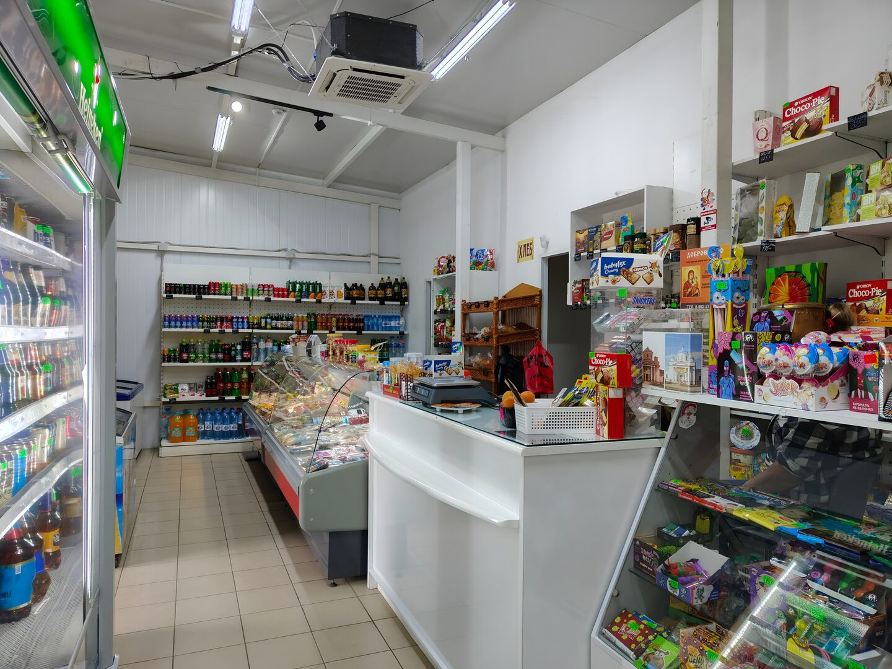

Продукты на каждый день
Базовые продукты для завтрака, обеда и ужина, бакалея и товары для домашней кухни.
Магазин у дома в селе Поповка Алексинского района Тульской области. Здесь можно купить продукты на каждый день и нужные товары для дома без поездки в город.

Ассортимент меняется по поставкам, поэтому наличие конкретной позиции лучше уточнить по телефону. Основные группы товаров, за которыми заходят жители Поповки:
Базовые продукты для завтрака, обеда и ужина, бакалея и товары для домашней кухни.
Напитки, чай, кофе, сладости и небольшие покупки к дороге или встрече с друзьями.
Свежая выпечка и продукты для быстрого перекуса — удобно купить по пути домой.
Повседневные продукты для холодильника. Наличие отдельных позиций зависит от поставки.
Сезонные товары появляются в ассортименте в течение года, когда идут соответствующие поставки.
Полезные мелочи, которые нужны дома каждый день, чтобы не ехать за ними далеко.
Цены и наличие меняются. Если вам нужен конкретный продукт, позвоните в магазин перед поездкой: +7 902 909-38-79.
Адрес магазина: село Поповка, улица Победы, 24, Алексинский район, Тульская область. Работаем ежедневно с 8:00 до 22:00. У магазина есть парковка и пандус.
Да. Позвоните по номеру +7 902 909-38-79, и продавец подскажет по текущему наличию.
Каждый день без выходных, с 8:00 до 22:00.
Село Поповка, улица Победы, 24, Алексинский район, Тульская область.